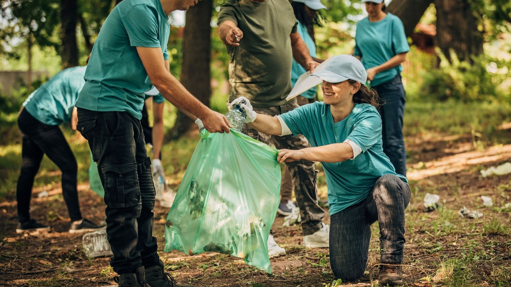
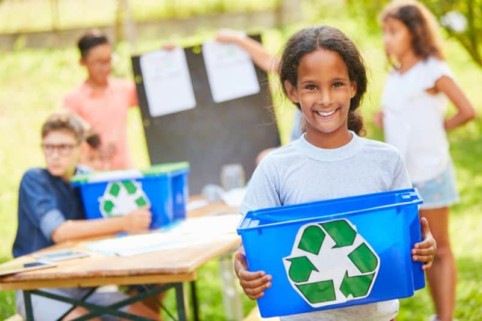
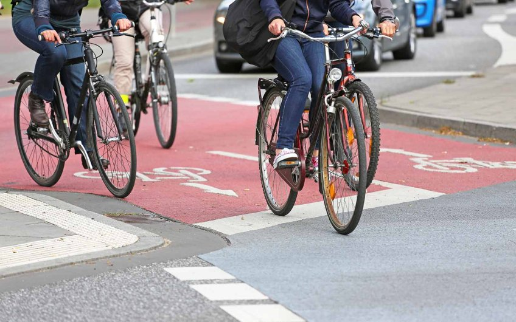
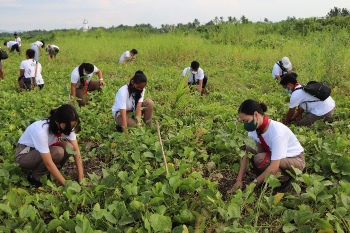
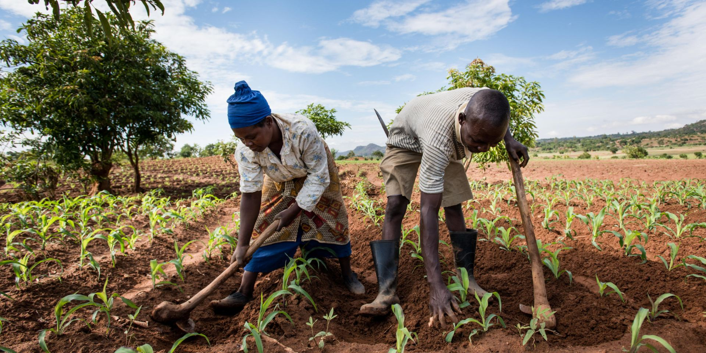
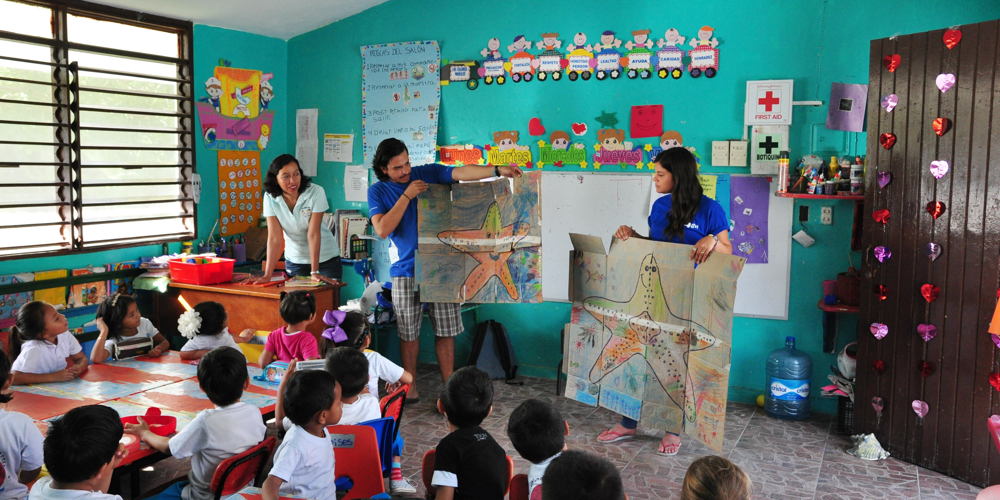
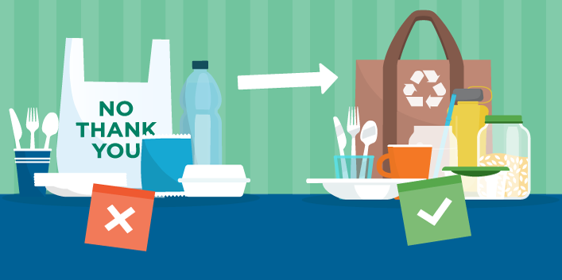
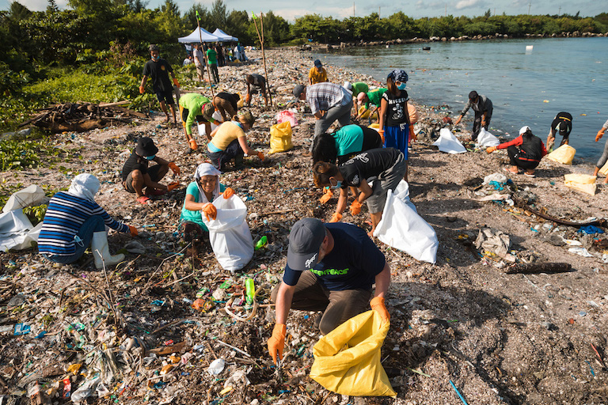
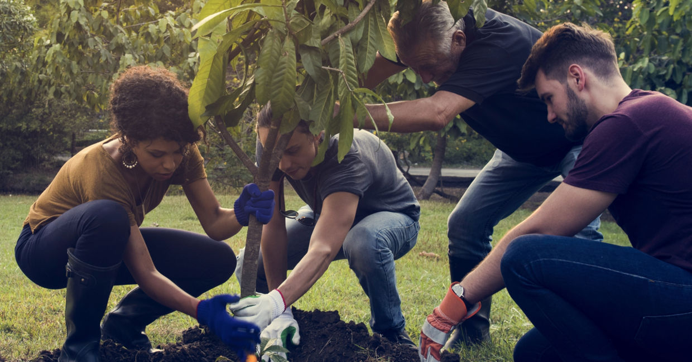

Embracing Harmony: Exploration of Ways to Environmental Preservation and Protection

Environmental preservation is a pressing issue in today's world, as the planet faces numerous threats from human activities. It is crucial
that we take immediate action to protect and conserve our environment for future generations. Environmental preservation requires collective
effort from individuals and communities alike. It is our responsibility to preserve the environment for future generations so that they too
may enjoy its beauty and resources. There are several ways in which we can contribute to environmental preservation.
Environmental
preservation is a critical aspect of our responsibility as stewards of the planet. By adopting sustainable practices in various aspects of
our lives, we can contribute to the well-being of the environment.
-
Reduce, Reuse, Recycle

One fundamental approach is to embrace the mantra of "Reduce, Reuse, Recycle." The importance of reduce, reuse, and recycle cannot be
overstated in today's world. With the ever-increasing population and rapid depletion of natural resources, it has become imperative to
adopt sustainable practices to preserve our environment for future generations. This involves minimizing consumption, opting for products
with minimal packaging, and actively participating in recycling programs within our communities.
- Minimize consumption
- Choose products with minimal packaging
- Participate in recycling programs
-
Conserve Water
Water is a finite resource, and with the growing population and increasing demands for water, it is crucial that we take steps to conserve
it. Conserving water is vital for several reasons: ensuring an adequate supply for everyone's needs, protecting the environment, saving
energy and money. It is essential that individuals take responsibility by adopting simple habits like fixing leaks promptly or using efficient appliances to contribute towards this important cause.
- Fix leaks promptly
- Use water-saving appliances
- Water plants during non-peak hours
-
Save Energy
In today's fast-paced world, energy consumption has reached unprecedented levels. As a result, it is imperative that we take immediate
action to save energy in order to preserve our environment. By conserving energy, we can reduce greenhouse gas emissions and slow down
climate change. Most importantly, saving energy is essential for preserving our environment. It not only helps combat climate change but
also preserves natural resources and provides economic benefits.
- Use energy-efficient appliances
- Turn off lights and electronics
- Unplug chargers and devices not in use
-
Sustainable Transportation

Sustainable transportation is an essential aspect of modern society, as it plays a crucial role in reducing environmental pollution and
promoting a healthier lifestyle. The concept of sustainable transportation revolves around the idea of using modes of transportation that
have minimal negative impacts on the environment and human health. By promoting public transport systems, encouraging the use of electric vehicles,
and creating walkable communities, we can pave the way towards a greener future. It requires collective efforts from governments, individuals,
and businesses to make sustainable transportation a reality.
- Use public transport
- Carpool, bike, or walk
- Consider electric or hybrid vehicles
-
Plant Trees and Maintain Green Spaces

Trees are not only aesthetically pleasing, but they also provide numerous environmental benefits. They act as natural air filters, absorbing
harmful pollutants and releasing clean oxygen into the atmosphere. Additionally, trees help to regulate temperature by providing shade and
reducing the effects of urban heat islands.
Planting trees and maintaining green spaces contribute to biodiversity conservation. These areas serve
as habitats for various species of plants and animals, promoting ecological balance.
- Support tree-planting initiatives
- Participate in community gardening
-
Sustainable Agriculture

Sustainable agriculture is a farming practice that focuses on producing food in an environmentally friendly and socially responsible manner.
It aims to meet the needs of the present generation without compromising the ability of future generations to meet their own needs. This approach
emphasizes the use of natural resources efficiently, minimizing waste and pollution, and promoting biodiversity.
- Support local and organic farmers
- Reduce meat consumption
- Choose sustainably sourced options
-
Education and Awareness

Education and awareness play a crucial role in environmental preservation. As the world grapples with pressing environmental issues such as
climate change, deforestation, and pollution, it is imperative that individuals are educated about the importance of preserving our
environment and are aware of the actions they can take to make a positive impact.
Education and awareness also empower individuals by
giving them a sense of responsibility for their environment. When people understand that their actions have consequences for both present
and future generations, they are more likely to adopt sustainable practices in their daily lives.
- Stay informed about environmental issues
- Share knowledge with others
- Promote environmental awareness
-
Use Eco-friendly Products
The use of eco-friendly products has become increasingly important in our modern society. As we continue to witness the detrimental effects
of pollution and climate change, it is crucial that we make conscious choices to protect our environment. Eco-friendly products are those
that are made from sustainable materials, have minimal impact on the environment during production and disposal, and promote a healthier lifestyle.
In addition to environmental and health benefits, using eco-friendly products also supports sustainable practices and ethical production
methods. Companies that prioritize sustainability often pay fair wages to workers and ensure safe working conditions. By choosing these products
over conventional ones, we contribute to a more equitable society.
- Choose products with minimal environmental impact
- Look for eco-friendly certifications
-
Reduce Single-Use Plastics

Single-use plastics, such as plastic bags, water bottles, and straws, have a devastating impact on the environment. They contribute to pollution
in our oceans and landfills, harm wildlife, and take hundreds of years to decompose. Therefore, it is imperative that we take immediate
action to reduce our reliance on these harmful materials.
reducing single-use plastic is a pressing issue that requires immediate
action from individuals, governments, and businesses alike. By implementing stricter regulations, educating people about the environmental
impact of these materials, and promoting reusable alternatives, we can work towards a cleaner and healthier planet for future generations.
- Use reusable bags and containers
- Avoid single-use plastic items
-
Participate in Clean-up Activities

clean-up activities help to reduce pollution and preserve natural resources. By picking up litter, recycling waste, and cleaning up polluted
areas, we can prevent harmful substances from entering our ecosystems. This promotes the health of plants and animals, as well as the quality
of our air and water. Additionally, participating in clean-up activities helps to conserve resources by promoting recycling and reducing
waste production.
clean-up activities serve as educational opportunities for both children and adults alike. They raise awareness about
the importance of environmental conservation and teach individuals about sustainable practices such as recycling or composting. By actively
participating in these activities, people become more conscious of their own actions that may contribute to pollution or waste generation.
- Organize clean-up initiatives
- Join local clean-up events
-
Conserve Biodiversity
Biodiversity, the variety of life on Earth, is essential for the health and stability of our planet. It encompasses all living organisms,
from plants and animals to microorganisms, and the ecosystems they inhabit. However, in recent years, biodiversity loss has become a pressing
issue due to human activities such as deforestation, pollution, and climate change. Therefore, it is crucial that we take immediate action to
conserve biodiversity.
preserving biodiversity is important for maintaining ecosystem balance. Each species plays a unique role in its
environment; their interactions contribute to the overall functioning of ecosystems. Preserving biodiversity is an ethical responsibility towards
other living beings with whom we share this planet. Every species has intrinsic value and a right to exist without human interference or exploitation.
- Protect natural habitats
- Avoid products from endangered species
-
Get Involved in Environmental Organizations

Joining an environmental organization allows individuals to contribute their time and skills towards protecting the environment. These
organizations work tirelessly to raise awareness about environmental issues, advocate for sustainable practices, and implement conservation
projects. By becoming a member or volunteer, individuals can actively participate in activities such as tree planting campaigns, beach clean-ups,
or lobbying for stricter environmental regulations.
Moreover, getting involved in environmental organizations provides an opportunity
for personal growth and development. It allows individuals to learn more about the environment and its intricate ecosystems. Through workshops
and training sessions organized by these organizations, one can gain knowledge about sustainable living practices and how small changes in
daily routines can make a significant impact on the environment.
- Join or support conservation groups
- Volunteer for environmental projects
Remember: Small actions collectively make a significant impact. Each small step makes a significant difference when it
comes to protecting our planet for future generations. By incorporating these practices into your daily life, you contribute to the preservation
of the environment and the well-being of our planet. It is imperative that we all play an active role in making these changes so that we can
ensure a sustainable future for ourselves and those who come after us.
Join us in our mission, and together, let's nurture a sustainable tomorrow for all.
Green Guardians - Advocates for Earth, Advocates
for Tomorrow.